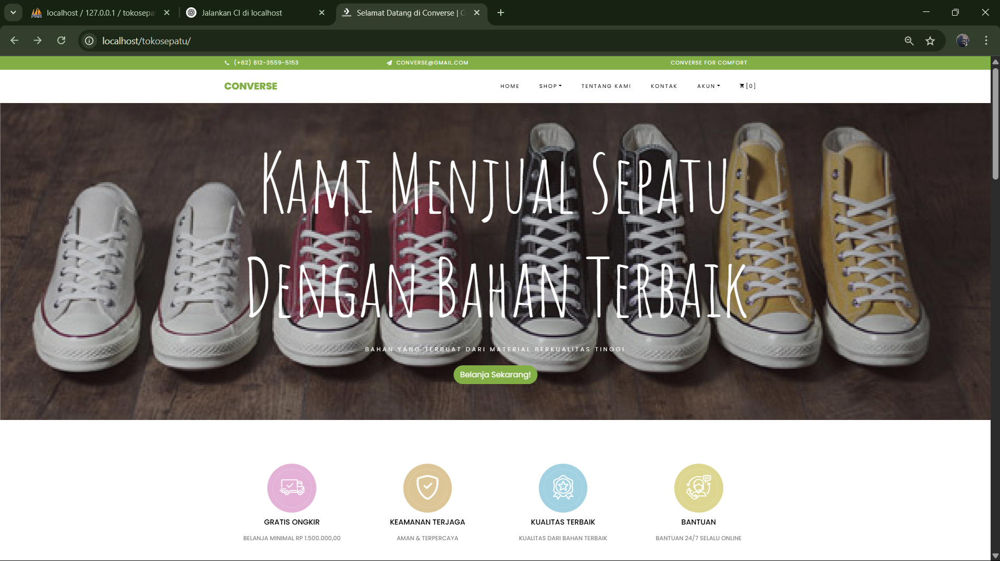

Tentang saya
Saya adalah mahasiswa D3 Teknologi Telekomunikasi di Telkom University yang memiliki ketertarikan kuat pada pengembangan sistem komunikasi digital. Selama perkuliahan, saya telah mempelajari berbagai aspek teknologi jaringan, pemrograman, serta pengembangan website.
Fokus utama saya saat ini adalah mengembangkan keterampilan praktis yang relevan dengan industri, terutama dalam hal web development dan sistem komunikasi.
Skills
FrontEnd Dev
Figma
Databases
MySQL dan PHP
Website Dev
HTML, Javascript, CSS
Proyek

Tugas besar E-commerce Platform
Toko sepatu menggunakan CodeIgniter 3 dengan sistem relasi database menggunakan PHP.